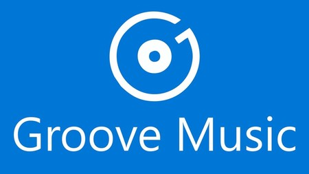

Aqui nos centraremos en las aplicaciones que ya vienen previamente instaladas en el Windows 10
Aplicaciones
Calculadora
Calculadora es una calculadora virtual presente en todos los sistemas operativos de Microsoft Windows.
La calculadora ha sido un componente de Microsoft Windows desde su primera versión (Windows 1.0), el modo estándar viene por defecto, que permite realizar operaciones de cálculos de aritmética. También existe el modo científica, que contiene logaritmos, conversiones de la base numérica, operaciones lógicas, radiantes, grados y grados centesimales.También ofrece soporte para las funciones estadísticas.
Cortana
Cortana es un asistente virtual creado por Microsoft para Windows 10, Windows 10 Mobile, Windows Phone altavoz inteligente Invoke, Microsoft Band, Xbox One ,Windows Mixed Reality, y Amazon Alexa.
Cortana puede establecer recordatorios, reconocer voz natural sin la necesidad de ingresar el teclado y responder preguntas utilizando información del motor de búsqueda de Bing.
Cortana está actualmente disponible en inglés, portugués, francés, alemán, italiano, español, chino y japonés, dependiendo de la plataforma de software y la región en la que se utiliza. Cortana compite principalmente contra asistentes como Apple Siri, Google Assistant y Amazon Alexa.
Groove Música

Groove Música (antes Xbox Music y Zune Música) es un reproductor de música digital desarrollado por Microsoft integrado en los ordenadores de escritorio y tabletas con sistema operativo Windows 10 o posterior y en los teléfonos con sistema operativo Windows 10 Mobile (actualmente descontinuado). En sus inicios, las aplicaciones de Groove integraban también un servicio música en streaming por suscripción llamado Groove Music Pass y una tienda en línea para la compra permanente de títulos.
Microsoft Edge
Microsoft Edge es un navegador web basado en Chromium y desarrollado por Microsoft. Fue lanzado por primera vez para Windows 10 y Xbox One en 2015, luego para Android e iOS en 2017, y para macOS en 2019.
Edge incluía inicialmente integración con el asistente virtual Cortana. Cuenta con soporte para extensiones alojadas en su propia tienda Microsoft Store; y a la vez con soporte para extensiones de la Chrome Web Store. A diferencia de Internet Explorer, Edge no es compatible con las tecnologías heredadas de ActiveX y BHO.
Originalmente construido con los propios motores EdgeHTML y Chakra de Microsoft, en 2019 Edge fue reconstruido como un navegador basado en Chromium, utilizando los motores Blink y V8. Como parte de este cambio (cuyo nombre en código es Anaheim), Microsoft ha hecho que las versiones preliminares de Edge basadas en Chromium estén disponibles en Windows 7, 8, 8.1 y macOS, además de Windows 10. Microsoft lanzó la primera versión de Edge basada en Chromium el 15 de enero de 2020.
Según StatCounter, en agosto de 2019 Edge superó la cuota de mercado de Internet Explorer (IE) en PC, Edge en cuarto lugar e IE en quinto. Si bien la cuota de IE se redujo, ninguna versión única de Edge es más popular que Internet Explorer 11. La cuota de mercado de Edge sigue siendo baja, con IE siguiendo esta tendencia. Sin embargo, combinando la cuota de mercado de Edge e IE, los navegadores de Microsoft ocupan el tercer lugar en la cuota de mercado del navegador de PC, Chrome es el primero y Firefox el segundo. Existen versiones móviles de Edge para Android e iOS. En las consolas de Microsoft, Edge reemplazó a IE como el navegador dominante unos meses después de su lanzamiento en 2015.
La cuota de mercado varía según la región. Algunos días de la semana, Edge ocupa el segundo lugar con una cuota del 10.02% en los EE. UU. en PC, y Firefox y Edge tienen una cuota muy similar a nivel mundial, cambian de lugar para el segundo y tercer puesto según el día.
Microsoft Store
Microsoft Store (anteriormente Windows Store) es la plataforma de distribución digital de software desarrollada por Microsoft como parte de Windows 8, Windows Server 2012, Windows 10 y Windows Server 2016 para proveer un catálogo de aplicaciones centralizado y seguro. Microsoft Store apoya tanto aplicaciones gratuitas como de pago, con éstas últimas costando desde 1,49 a 999.99 USD y ofreciendo posibles pruebas gratuitas. La tienda de Windows se puso a disposición simultáneamente con el lanzamiento de la Comsumer Preview de Windows 8, que fue lanzada el 29 de febrero de 2012.
La tienda de Windows es el único medio de distribución de aplicaciones de estilo Modern para Windows 8/RT, la razón oficial es permitir a Microsoft escanear aplicaciones en busca de fallos de seguridad y programas maliciosos. Microsoft Store tiene un reparto de beneficios del 30% para Microsoft y 70% para el desarrollador. Una vez se llegue a 25,000 USD en ingresos, el reparto es de 80% para el desarrollador. Las transacciones económicas se realizan vía PayPal, no se aceptan puntos Microsoft. Los desarrolladores individuales pueden registrarse por 49 USD y las empresas por 99 USD. Los desarrolladores de 38 países pueden presentar solicitudes a Microsoft para publicar sus aplicaciones en Microsoft Store. La aplicación puede soportar 109 idiomas, siempre y cuando se apoye en uno de los 12 idiomas de la aplicación de certificación.
Office 16
Microsoft Office 2016 (nombre clave Office 16) es una versión de la suite de oficina Microsoft Office, sucesora de Office 2013 y de Office para Mac 2011 y predecesora de Office 2019. Fue lanzado en MacOS el 9 de julio de 2015 y en Microsoft Windows el 22 de septiembre de 2015 para suscriptores de Office 365. El soporte principal finaliza el 13 de octubre de 2020 y el soporte extendido el 14 de octubre de 2025, al mismo tiempo que Windows 10. La versión con licencia perpetua en MacOS y Windows se publicó el 22 de septiembre de 2015. Office 2016 es la última versión compatible con Windows 7 y Windows 8.1.
One Drive
OneDrive (antes SkyDrive, Microsoft SkyDrive, Windows Live SkyDrive y Windows Live Folders) es un servicio de alojamiento de archivos. Fue estrenado el 18 de febrero de 2014. Actualmente, este servicio ofrece 5 GB de almacenamiento gratuito, más 15 GB para el álbum de cámara, los cuales se les han retirado a muchos usuarios, que habían adquirido ese derecho por la compra de algún teléfono inteligente Lumia. Se pueden subir hasta 5 archivos a la vez de manera estándar con cualquier navegador, y también se puede instalar una herramienta ActiveX que permite arrastrar un número ilimitado de archivos directamente desde el Explorador de Windows. Es accesible por su página web desde ordenadores y dispone de aplicaciones para Windows 10 (app UWP), Windows 8, Windows Phone, iOS y Android que permiten editar documentos y hojas de cálculo.
One Note
Microsoft Office OneNote, o simplemente OneNote, es un programa con licencia freeware desarrollado por Microsoft para facilitar la toma de notas, la recopilación de información, y la colaboración multiusuario. OneNote permite colocar notas (introducidas a mano o con teclado) y ofrece la posibilidad de agregar dibujos, diagramas, fotografías, elementos multimedia, audio, vídeo, e imágenes escaneadas. También permite crear una impresora virtual a fin de enviar archivos o documentos desde otros programas. Ofrece además el intercambio de notas a través del uso compartido de archivos o WebDAV. El producto fue lanzado en 2003 e inicialmente no estaba incluido en Microsoft Office.
La versión actual es Microsoft Office OneNote 2016 y además de distribuirse como parte de la suite Microsoft Office, también se distribuye como una aplicación gratuita (con algunas limitaciones) en Windows, OS X, Windows Phone, Android, iOS y se ofrece como parte de Office Online.
Aunque OneNote es más comúnmente utilizado en portátiles o PCs de escritorio, tiene características adicionales que permiten usarlo en una Tablet PC por medio de un estilete que en algunos entornos son más apropiadas que los teclados.
Aunque OneNote es más comúnmente utilizado en portátiles o PCs de escritorio, tiene características adicionales que permiten usarlo en una Tablet PC por medio de un estilete que en algunos entornos son más apropiadas que los teclados.
Paint 3d
Paint 3D, es una de las nuevas aplicaciones incluidas en el sistema operativo Windows 10 a partir de la actualización Creators Update (con nombre clave "Redstone 2" (RS2)) y una de varias aplicaciones de modelado 3D introducidas o mejoradas, junto con Vista 3D, Visor de realidad mixta, holograms y 3D Builder. Apuesta por simplificar la creación, gestión y edición de contenidos en 3D y soporta de forma nativa el formato abierto para contenido 3D, GL Transmission Format (gITF).
Microsoft ha puesto en marcha una comunidad en línea que ofrece a los usuarios la posibilidad de exportar sus creaciones y compartirlas con la comunidad o descargar objetos 3D creados por otros usuarios.
Skype
Skype (pronunciado /ˈskaɪp/) es un software propietario distribuido por Microsoft, tras haber comprado la compañía homónima y que permite comunicaciones de texto, voz y vídeo sobre Internet (VoIP). Fue diseñado en 2003 por el danés Janus Friis y el sueco Niklas Zennström (también creadores de Kazaa) y desarrollada en su solución técnica por los estonios Priit Kasesalu, Ahti Heinla y Jaan Tallinn, ya que de hecho Skype nació en Tallin, Estonia. El código y protocolo de Skype permanecen cerrados y son privativos de la aplicación, pero los usuarios interesados pueden descargar gratuitamente la aplicación ejecutable del sitio web oficial. Los usuarios de Skype pueden hablar entre sí gratuitamente.
Desde 2013, la red de Windows Live Messenger (anteriormente MSN Messenger) se integró a Skype tras la compra de Microsoft; un usuario MSN inicia sesión con las mismas credenciales que usaba en la red anterior para comunicarse con otro contacto de Windows Live o Skype pero solo en texto; para usar el audio y video tiene que vincular su cuenta Hotmail/Outlook con Skype, pero esto es completamente opcional.
Esta aplicación también incluye una característica denominada YY SkypeOut, que permite a los usuarios llamar a teléfonos convencionales, cobrándoles diversas y bajas tarifas según el país de destino, pudiendo llamar a casi cualquier teléfono del mundo.
Otra opción que brinda Skype es SkypeIn, gracias a la cual se otorga un número de teléfono para que desde un aparato telefónico, en cualquier parte del mundo, se pueda contactar al computador. Además, se provee de un servicio de buzón de voz.
El logotipo de Skype tiene forma de nube, y su interfaz es muy parecida a la de otros programas de mensajería instantánea, tales como Windows Live Messenger o Yahoo! Messenger y, de igual forma que en estos, es posible entablar una conversación de mensajes instantáneos entre usuarios de la misma aplicación. Este programa también permite dejar mensajes de voz (buzón) en caso de que el usuario no se encuentre disponible, siendo ese un servicio de pago que viene incluido con SkypeIn.

La agencia de inteligencia estadounidense Agencia de Seguridad Nacional (NSA) monitoriza las conversaciones de Skype mediante el sistema de vigilancia electrónica PRISM. Otro aspecto para tener en cuenta es que si el usuario desea cancelar su cuenta en Skype, encuentra multitud de obstáculos para poder hacerlo, colocados intencionadamente por la propia empresa.
En septiembre de 2005 la empresa fue comprada por eBay por 5900 millones de dólares. Sin embargo, en julio de 2009 los desarrolladores antiguos del sistema demandaron a eBay porque las licencias de Joltid (que provee los códigos que utiliza el núcleo del sistema y que es una subsidiaria de los antiguos dueños) habían caducado y eBay estaba infringiendo sus derechos al seguir usándolas. Finalmente y al no poder reemplazar la tecnología que estaba siendo infringida, eBay vendió el 70 % de su participación de Skype a Silver Lake Partners, un grupo que sí incluye a Joltid.
En octubre de 2010, Skype 5.0 para Windows fue liberada con un conjunto de complementos y nuevas funciones, entre las más importantes, la inclusión de una pestaña de Facebook que permite a sus usuarios enviar mensajes SMS, efectuar chat o llamar a sus amigos de Facebook, directamente del Feed de Noticias. Por otra parte la versión 5 ha empeorado la usabilidad de la pantalla compartida y del acceso a los teléfonos de los contactos.
El 10 de mayo de 2011 Microsoft anunció la compra completa de Skype por 8500 millones de dólares.
En junio de 2011, Skype proporciona a Facebook el uso de su infraestructura dentro de las 72 horas para realizar videollamadas desde dentro del sitio web. Para esto es necesario instalar un complemento , un programa que queda siempre residente y desde cualquier navegador web añade el botón de llamar a los perfiles y al chat web de Facebook; en realidad este servicio es independiente de Skype (Un usuario de Skype no puede hacer contacto vía voz o vídeo a usuarios de Facebook, ni estos a ellos, incluso con el complemento de navegador instalado). Curiosamente, años antes Myspace tenía el mismo complemento también de Skype.
El 7 de noviembre de 2012, Microsoft anunció oficialmente la retirada de Windows Live Messenger en todo el mundo el 8 de abril de 2013 (aunque anteriormente la fecha anunciada fue la del 15 de marzo), a excepción de China, debido a que Skype es operada por otra compañía en ese país. La transición comenzó el 8 de marzo de 2013, cuando el cliente de computadoras de Windows Live Messenger ya no podía acceder al servicio y el usuario era instado a instalar Skype. En octubre de 2013, Microsoft dejó de soportar el protocolo XMPP, imposibilitando a las aplicaciones que usaban el método de inicio de sesión de Windows Live Messenger conectarse al servicio. Después de esto, en marzo de 2014, el protocolo MSP dejó de funcionar, lo que tuvo como resultado el final de Windows Live Messenger, completando así la transición.
Xbox
Xbox es una marca de videojuegos creada por Microsoft que incluye una serie de videoconsolas desarrolladas por la misma compañía, de sexta a octava generación, así como aplicaciones (juegos), servicios de streaming y el servicio en línea Xbox Live. La marca fue introducida por primera vez el 15 de noviembre de 2001 en los Estados Unidos, con el lanzamiento de la consola Xbox.

Dicho dispositivo original fue la primera consola de videojuegos ofrecida por una empresa estadounidense después que de la Atari Jaguar detuvo ventas en 1996. La consola llegó a más de 24 millones de unidades vendidas hasta el 10 de mayo de 2006. La segunda consola de Microsoft, Xbox 360, fue lanzada en 2005 y ha vendido más de 85.6 millones de consolas en todo el mundo hasta junio del 2015. La sucesora de Xbox 360 y la consola de Microsoft más reciente, Xbox One, fue revelada el 21 de mayo de 2013. Xbox One ha sido lanzada en 21 mercados de todo el mundo el 22 de noviembre de 2013, siendo el Reino Unido el primer país.
Aplicaciones Generales
Estas aplicaciones, se encuentran en Windows desde hace varias versiones.
Bloc de notas
El bloc de notas es un editor de texto simple incluido en los sistemas operativos de Microsoft desde 1985. Su funcionalidad es muy simple.
Internet Explorer
es un navegador web de Internet producido por Microsoft para su plataforma Windows. Fue creado en 1995 tras la adquisición por parte de Microsoft del código fuente de Mosaic, un navegador desarrollado por Spyglass, siendo rebautizado entonces como Internet Explorer. Las primeras versiones, basadas en Mosaic, no supusieron ninguna amenaza para el entonces dominante Netscape Navigator, ya que eran bastante simples y no eran compatibles con algunas de las extensiones más populares de Netscape que dominaban la web de la época (como los marcos o JavaScript). Fue el navegador de Internet con mayor cuota de mercado, ya que se incluye integrado por defecto con Windows, hecho que le ha costado a Microsoft demandas por monopolio en Europa.
Mapa de caracteres
es una utilidad incluida con los sistemas operativos Microsoft Windows y se utiliza para visualizar todas las fuentes tipográficas instaladas en el sistema, para comprobar la entrada del teclado (Alt + código).
Paint
es un programa simple de dibujo gráfico desarrollado por Microsoft. Su antecesor fue el PaintBrush, incluido desde Windows 1.0 hasta Windows 3.1. Desde entonces, Paint ha acompañado al sistema operativo Microsoft Windows desde Windows 95.
Reproductor de Windows Media
es un reproductor multimedia que permite reproducir música y vídeo de formatos compatibles (.mp3, .mp4, .waw, .wmv, etc.). La última versión de este reproductor ha sido la versión 12. Windows Media Player está incluido en todas las versiones de Windows, incluyendo las versiones más recientes como Windows 8.1 o Windows 10.
Windows Journal
es una aplicación creada por Microsoft e incluida desde Windows XP hasta Windows 7. Está pensada para usarse con pantallas táctiles y capturar dibujos directamente de esta forma, también puede insertar imágenes y texto; los documentos generados tienen extensión jnt.
WordPad
es un procesador de textos básico que se incluye en casi todas las versiones de Microsoft Windows desde Windows 95 en adelante. Es más avanzado que el Bloc de notas pero más sencillo que el procesador de textos de Microsoft Works y Microsoft Word.